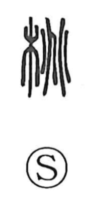

桃

Kun: momo | On: tou
peach ・ peach tree
Explanation
A phono-semantic character: the element 兆, originally the figure of divination cracks, provides the sound value and marks the On reading. The Shuowen glosses it as a fruit, specifically the peach. In ancient belief the peach had strong apotropaic power: brooms of peach wood bound with reed were used to sweep away malign forces, and a peach-wood bow with a wild-rose thorn arrow was employed in rites to repel evil.